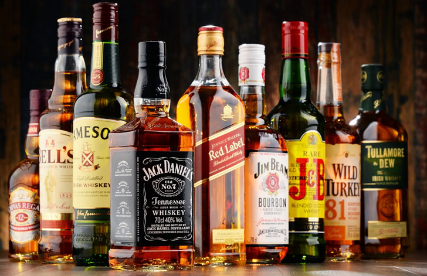
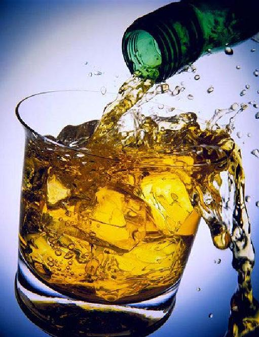
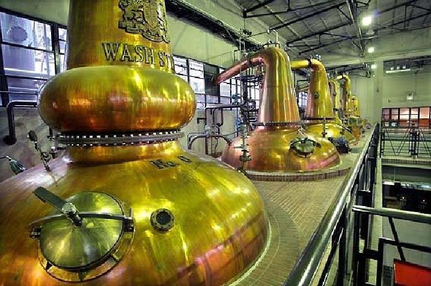

Мы расскажем вам об истории возникновения такого напитка, как виски. Вы узнаете, откуда произошло слово «виски», какая страна является родиной этого удивительного спиртного напитка, кто первым его изобрел и чем объясняется его популярность во всем мире.
Виски иногда называют «живой водой». Это понятие заложено в самом названии напитка. Лингвисты считают, что слово whisky имеет в своей основе кельтские корни и происходит от кельтского слова uisge baugh или uisge beatha. Слово whisky означает «вода жизни» и произносится как ooshka — «ушка». Эти слова кельтского происхождения являются аналогами латинского словосочетания aqua vitae, что в переводе означает «вода жизни».
До сих пор неизвестно, кто имеет право называться первым открывателем виски — Шотландия или Ирландия. Долгие годы эти две страны ведут спор о том, на чьей территории впервые появился этот напиток. Победителей в этом споре пока нет. Самые ранние упоминания о виски найдены в шотландских записях от 1494 года, хотя ирландцы оспаривают подобное доказательство, утверждая, что виски появилось значительно раньше и именно на их территории. К сожалению, сами ирландцы не располагают письменными доказательствами.
Шотландия не так давно отмечала юбилей, посвященный 500–летию виски. В этой части Великобритании занимаются висковарением более 500 лет. Проведением подобного праздничного мероприятия Шотландия попыталась закрепить за собой право первенства, как страны–прародительницы виски.
Ирландия отказалась признать превосходство шотландцев. Патриоты своей страны принялись рыться в древних архивах среди старинных записей, которые могли бы с уверенностью доказать, что право называться прародительницей виски принадлежит именно Ирландии. К сожалению, пока не удалось выяснить, в архивах Шотландии или Ирландии находится самая древняя запись, упоминающая этот напиток.
Мы хотим еще раз обратиться к самому названию напитка. Дело в том, что в последнее время слова кельтского происхождения стали писать на английский манер и сокращенно. Поэтому в настоящее время вы можете встретить на бутылках с виски такую форму надписи, как whisky — английский вариант и whiskey — американский вариант. Слово whisky пишется без буквы «е» также в Шотландии и Канаде и с буквой «е» — в Ирландии.
Сегодня многие склонны думать, что виски впервые появилось на территории Шотландии. В этой стране технология производства виски поставлена на широкую ногу. Именно благодаря шотландцам виски в настоящее время называют на шотландский манер — скотчем.
Настоящее Skotch Whisky невозможно спутать ни с каким другим его сортом. Технология производства этого крепкого напитка была придумана и разработана монахами в период средневековья. Они занимались приготовлением различных спиртных напитков, в том числе обладающих целебными свойствами.
Этот спиртной напиток появился отнюдь не случайно. Монахи взяли пророщенное зерно ячменя, высушив и перемолов его, залили водой и оставили в бочке. В результате они получили спирт, который оставили в бочке на несколько лет. Таким образом появилось настоящее виски. Спирт выдерживали в дубовых бочках. В скотч монахи добавляли, что принято делать до сих пор, талую воду, непременно зимнюю. Следует заметить, что и средневековые монахи, и современные шотландцы чуть ли не с религиозной благоговейностью относятся к своему национальному напитку.
Затем изобретатели виски попробовали произвести различные сорта этого напитка. Виски стали делать не только из ячменя, но из кукурузы, ржи и пшеницы. Соединив несколько видов зрелого виски, монахи получили совершенно новый вкус и аромат. В итоге появилось несколько определенных сортов этого алкогольного напитка.
В летописи 1494 года рассказывается о том, как монахи одного шотландского монастыря получили первое виски, и дается подробное описание этого нового напитка: «Виски — это жидкость, перегоняемая несколько раз и получаемая в результате брожения размятых хлебных злаков».
Как уже упоминалось выше, трудно назвать точную дату изобретения виски. Но предположительно это произошло несколько раньше 15 века, так как в 17 веке висковарение было уже хорошо развито в Шотландии.
Процессом производства виски начали активно интересоваться врачи, в основном хирурги и цирюльники. Массовый интерес к виски поставил под серьезную угрозу хлебную промышленность Шотландии, так как выращиваемого в то время ячменя стало не хватать для выпечки. Дело приняло такой серьезный оборот, что его рассмотрением стало заниматься правительство. Оно приняло закон, в результате которого производителей виски обложили непосильным налогом.
С изобретением и налаживанием производства виски по всей стране стали появляться так называемые вискикурни. Слово «вискикурня» звучит довольно странно и загадочно. Вот какое поэтическое определение дает этому слову компания по производству этого напитка «Чивас Бразерс»:
«В этом слове присутствует какое–то вкрадчивое колдовство — чудится что–то ведьмино на курьих ножках, к лесу задом, к рыцарю передом. Так оно и есть — среди серо–бархатных шотландских пейзажей, украшенных пухлыми овцами в застывших кудряшках и рыжими лобастыми бычками в непослушных челках, тут и там из темной ветвистой зелени выступают затейливые строения из мшистого камня, где в тишине каменных дворов бродят сытые, густые запахи, будоражащие воображение знатока и ударяющие в голову случайного туриста–посетителя».
В шотландских вискикурнях происходит таинство рождения настоящего виски. В одной из следующих глав будет рассказано о различных сортах, составе и способах приготовления этого популярного напитка: о шотландском, ирландском, американском и прочих видах этого спиртного. Виски, производящееся в разных странах, отличается по вкусу, так как давно выработаны и существуют до сих пор технологии его изготовления, специальные виды и сорта злаков, а также, что очень важно, качество и характер требуемой для производства виски воды.
Со временем виски стало не только популярным, но поистине королевским напитком. Дело в том, что в Шотландии появились настоящие мастера по производству лучшего виски. Некоторые из них смогли на весь мир прославить свое имя. В частности, братья Чивас, которые организовали свою вискикурню, переросшую впоследствии в большую компанию «Чивас Бразерс». Виски, производившееся ими, получило свое второе название — Chivas, которое сегодня является маркой компании.
Эта компания является старейшим производителем виски. Она завоевала очень высокую репутацию тем, что поставляла виски ко двору Ее Величества. Секрет шотландских мастеров, по их же словам, заключается в шотландской воде. До сегодняшнего дня специалисты считают, что такой вкусной воды, как шотландская, нет во всем мире. Дело в том, что со времени появления виски каждый производитель этого напитка отыскивал себе свой неповторимый источник воды, чем и объясняется большое разнообразие сортов виски.

Братья Чивас не остановились на каком–то одном сорте виски, а продолжили осваивание новых сортов. Они стали смешивать различные сорта виски и хранили их в дубовых бочках, в которых раньше отстаивались коньяки, мадера и херес. Благодаря бочкам, ранее использованным под другие алкогольные напитки, хранившееся в них виски приобретало неповторимый вкус. Известно, что братья Чивас смешивали до сорока сортов виски.
Что и говорить, многие люди пытались стать производителями настоящего виски, не уступающего по своим качествам напитку Чивас. Однако это практически никому не удалось. Чивас хранили в секрете технологию производства. И по сей день пропорции исходных компонентов для производства виски мастерами компании не разглашаются. Всего мастеров–винокуров в компании Чивас десять или двенадцать. Существует одна интересная деталь: подписывая контракт с компанией, они обязуются никогда не летать вместе в одном самолете, дабы в случае авиакатастрофы секреты изготовления виски не были утрачены.
В виски есть что–то магическое. Монахи, будучи хорошими врачевателями, постоянно прибегали к изобретению целебных напитков. Нельзя однозначно утверждать, что виски обладает важными целебными свойствами. Тем не менее когда–то оно рассматривалось как лекарственный препарат. Вполне возможно, что монахи произвели виски, изобретая очередное лекарство, целебную настойку или бальзам.
Всем известно, как алкоголь действует на человека. Он смешивает чувства, делает человека агрессивным или веселым. В то же время он заставляет нас видеть жизнь в несколько ином свете. Отличительная черта виски от прочих крепких спиртных напитков состоит в том, что оно согревает человека, успокаивает его душу и дарит чувство необыкновенного тепла и спокойствия. Стоит вдуматься в само название — «живая вода», которое говорит о том, что этот напиток способен оживить человека, подарить ему радость жизни.
Умиротворяющее свойство виски заметили не только монахи, но и лекари, которые одно время рекомендовали его пациентам как успокаивающее средство. Вскоре виски перестало употребляться как целебное средство и стало рассматриваться как алкогольный напиток. Хотя это не означает, что оно не оказывает никакого полезного действия на организм человека.
Новое творение монахов под названием «виски» было оценено по достоинству. Люди принялись искать изюминку нового напитка. Вскоре выяснилось, что в виски главную роль играет не столько содержание алкоголя, сколько сам вкус. Люди заметили, что чем больше выдержка виски, тем мягче и глубже, а одновременно и крепче становится его вкус.
Поиск вкуса и новых ощущений так понравился жителям Шотландии, что они не остановились на достигнутом и стали подбирать различные компоненты, насыщающие виски все новыми ароматами. В качестве компонентов этого алкогольного напитка начали применять мед, травы, пряности, спелые красные яблоки, херес, фруктовый сок.
Особая заслуга в изобретении новых сортов виски принадлежит жителям Северной Шотландии. В этой местности довольно суровый климат и, что самое важное, много торфяных болот. Северные шотландцы открыли миру секрет производства так называемого «копченого» виски.
Дело в том, что один шотландец, имя которого, к сожалению, неизвестно, предложил коптить зерна ячменя на торфяном дыму. Почему подобная идея пришла ему в голову, сказать трудно, но она в скором времени стала очень популярной. Дело в том, что благодаря этой операции виски приобрело ни с чем не сравнимый тяжеловатый копченый вкус. Возможно, изобретатель просто оказался любителем всего копченого. Но именно аромат дыма создал неповторимое виски.
Шотландцы начали производить виски, которое легко пьется и имеет необычный мягкий вкус дыма. Они делали виски, главным образом, из ячменя, в отличие от других производителей. В старинных записях говорится о том, что из ячменя получали солод, а затем держали над горящим торфом, запах которого впитывал напиток.
Хотя в Шотландии методы приготовления виски были одинаковыми, тем не менее хроники говорят нам о том, что существовали различные сорта виски в Хайленде, Лоуленде, Кэмпбелтауне и Айлейле, которые стали основными историческими центрами по производству данного вида спиртного. Секрет кроется в различном качестве и запахе горящего торфа, который встречается в вышеназванных центрах и качественно отличается друг от друга. Заметим, что ирландское виски на вкус, как шотландское, только без привкуса дыма, методы ирландского производства схожи с шотландскими. Это и послужило поводом к спору о том, что шотландцы позаимствовали древнее производство напитка у ирландцев и наладили его на свой вкус.
В Канаду виски попало гораздо позднее, и привезли его туда первые поселенцы из Европы, англичане и шотландцы. Канадское производство виски началось в начале 19 века. Местные производители выдерживают этот напиток шесть лет, достигая таким образом крепости в 45о. В этой северной стране виски стало довольно популярным напитком. Благо, в Канаде хватало различных видов злаков, идущих на его производство.
Что удивительно, виски оказалось способным повлиять на ход истории одной молодой страны, граничащей с Канадой. Как вы, наверное, догадались, речь идет о Соединенных Штатах Америки. Америка обратила внимание на виски и всерьез занялась его производством в начале 18 века. Самыми большими центрами по производству виски стали штаты Кентуки, Пенсильвания и Индиана. Если вы вспомните фильмы о Диком Западе и о ковбоях, перед вами наверняка встанет образ разбойника с бутылкой виски в одной руке и с заряженным кольтом в другой. Эта картина в действительности недалека от истины.
Так повелось, что содержание алкоголя в американском виски достигало 80 % и местные жители разбавляли этот напиток водой, доводя крепость до 50–52 %.
* * *
Америка славится сортом виски «Бурбон», который впервые был изготовлен в одноименной деревушке, что в штате Кентукки. Название ее закрепилось за виски. Изобрели «Бурбон» обычные жители деревни, которые решили приготовить себе спиртное, воспользовавшись записями производства виски, позаимствованными у представителей туманного Альбиона. Виски «Бурбон» с привкусом зерна распространился по всей Америке.
На сегодняшний день Соединенные Штаты являются самым крупным поставщиком виски во всем мире. Это право первенства далось американцам непросто. Они считают виски своим национальным напитком, но стоят в стороне от спора между шотландцами и ирландцами. Америке есть что вспомнить об истории своего виски, а именно о революции, причиной которой послужил именно данный напиток. Да, не удивляйтесь, это была, как говорят сами американцы, настоящая революция, и произошла она в 1794 году.
Революция виски 1794 года дала впервые американскому правительству в истории Америки возможность установить свой федеральный авторитет путем применения вооруженной силы в пределах государства. В США сложилась ситуация, подобная той, которая произошла в Шотландии.
Правительство Америки ввело налог на производство виски. Если в Шотландии эта вынужденная мера была продиктована нехваткой зерновых культур для производства хлеба, в Америке причиной послужило и увеличенное потребление злаков, и чрезмерное потребление виски населением страны. Многие мелкие собственники хорошо наживались, занимаясь изготовлением виски, а крупные производители терпели немалые убытки от самодеятельности фермеров и прочих любителей самопроизводства спиртного.
Налог, который правительство Соединенных Штатов ввело на производство виски, касался также других видов алкогольных напитков. Фермеры бастовали против слишком высокой таксы на спиртное. Александр Гамильтон, секретарь Министерства финансов, предложил правительству ввести высокий налог на алкогольную продукцию, что, по его мнению, сохранило бы большую часть злаковых культур, снизило производство спиртного в стране, а также его потребление из–за поднятия цен. К тому же, что немаловажно, правительство смогло бы найти необходимую сумму денег, чтобы оплатить национальные долги и установить власть национального правительства. Последний пункт в предложении Александра Гамильтона оказал свое действие, и закон о введении налога был принят в 1791 году.
Мелкие фермеры, живущие на границах страны и производящие виски в огромных количествах, возмутились и оказали сопротивление, атакуя своими акциями протеста местных федеральных представителей, которые занимались сбором введенного налога.
Принудительный закон не был отменен, поэтому акции протеста переросли в настоящее восстание, и в июле 1794 года около 500 вооруженных людей атаковали и сожгли дом регионального инспектора по сборам налога.
В следующем месяце президент Джордж Вашингтон издал прокламацию, призывающую восставших сложить оружие и вернуться домой. Президент, однако, не терял времени и начал собирать территориальную армию из соседних штатов. После проведения бесплодных переговоров Вашингтон отдал приказ о вступлении 13 000–ой армии на территорию восстания, но оппозиционеры разбежались, и столкновения противников не произошло. Было принято решение оккупировать опасный район. Практически все восставшие были допрошены, но их признали невиновными.
Многие американцы, в основном члены оппозиции и представители Республиканской партии Джефферсона, пришли в смятение, когда осознали всю силу правительства, предпринявшего первый шаг к установлению абсолютной власти.
Для федералистов, однако, самый важный момент заключался в том, что подобные действия возымели положительный результат и что национальное правительство одержало победу над восставшими и завоевало поддержку руководителей штатов путем приведения в действие нового закона на всей территории государства.
Как утверждают некоторые философы, история всегда развивается по кругу. В 1875 году, в Америке, группа производителей виски решила устроить заговор против федерального правительства и обманным путем уклониться от уплаты налога. Действуя в основном в таких крупных городах, как Сент–Луисе, Милуоки, Чикаго, они предложили крупную взятку внутреннему департаменту по сборам налогов с тем, чтобы его представители в Вашингтоне помогли им избежать крупной уплаты налога. Бенджамин Г. Бристоу, секретарь Министерства финансов, организовал секретное расследование, которое выявило круг заговорщиков, которым было предъявлено обвинение. Их оказалось 238 человек, а из них 110 были признаны виновными.
В народных массах стало распространяться мнение о том, что легально введенный налог поступал в республиканскую партию, в ее национальный комитет по перевыборам на президентский пост. Юлиссес С. Грант, руководитель республиканской партии, вынес данный вопрос на суд общественности. Хотя сам он не находился под подозрением, его личный секретарь Орлив Бэбкок был предан суду и обвинен в заговоре, но был оправдан после того, как Грант дал показания в защиту его невиновности.
Существует еще одна страна, где производство виски развито достаточно широко. Это — Япония. И действительно, если виски пересекло океан в западном направлении, почему бы ему не совершить путешествие на восток? Точная дата появления виски в Японии неизвестна, но вероятно, это случилось после того, как европейцы открыли для себя дальневосточные страны, когда активно стала развиваться торговля с Китаем и Японией.
Япония всегда была и остается загадочной и удивительной страной. Она активно осваивала все новое, что приходило к ней с далекого Запада, удачно вплетая это в свои традиции. Так произошло и с виски.
Известно, что о виски в Японии говорили уже в конце 18 века. Завезли его американцы, они же и научили японцев технологии производства. Народ островного государства изготовлял виски в небольших количествах, отдавая предпочтение национальным напиткам, а особенно сакэ. Японцы попытались провести эксперимент и попросту стали изготовлять виски с сакэ — это было более эффективно.
Японцам очень пришлось по душе виски с сакэ. Сакэ — это японская водка, которую местные жители готовили из риса. Виски со вкусом сакэ можно было по праву назвать национальным напитком, изобретенным японцами. Риса в Японии было много, и никакой угрозы по нехватке зерновых и злаковых культур возникнуть не могло.
Через довольно короткое время японцы основали вискикурни на всех крупных островах своей маленькой страны. Со временем самыми крупным центром по производству виски стал Токио.
Такова краткая история виски. Появившись как изобретение монахов–целителей, оно нашло своих почитателей во всем мире. Виски варили с давних времен чуть ли не в каждом доме и за небольшую плату продавали всем желающим.
Виски в Шотландии, Англии, а особенно в Америке, стало настоящим кумиром общества, вынуждая правительство этих стран принимать закон и вводить непомерные налоги, превращая виски в довольно дорогой напиток.
Однако в XVII–XIX веках предприниматели взялись за виски всерьез и смогли
добиться улучшения качества напитка, а также значительно расширили рынок его сбыта, закрепив право производства виски за определенными странами.
Надеемся, попробовав виски, вы станете настоящим ценителем этого напитка и обязательно почувствуете всю его волшебную силу. Глоток виски подарит вам чувство необыкновенного спокойствия, придаст уверенности и вы сможете взглянуть на мир по–иному, ибо «живая вода» вернет вам вкус жизни, согреет душу и подарит тепло.